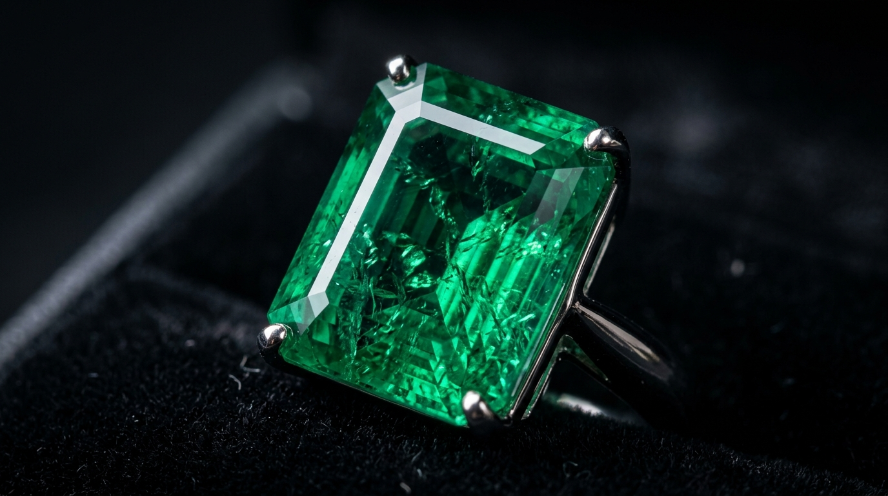

Emerald: Properties, Buying Guide & the Art of Green

Emerald, the lush green gemstone of spring and romance, has captivated humanity since antiquity. Cleopatra was famously obsessed with them, and the Incas revered them as holy stones. The perfect emerald exhibits a green so vivid and mesmerizing that it sets the standard for all other green stones.
The Beryl Family and the Jardin
Emerald is the most precious member of the beryl mineral family. Its green color comes from trace amounts of chromium and sometimes vanadium. Unlike diamonds or sapphires, emeralds are rarely flawless. The geological conditions required to form emeralds are highly volatile, resulting in numerous internal fractures and inclusions.
These inclusions are so characteristic that the French term jardin (garden) is used to describe them. Rather than being seen as flaws, a pleasing jardin is considered proof of natural origin and gives the stone character.
Origins: Colombia vs. Zambia vs. Brazil
- Colombian Emeralds: The historical gold standard. Mines like Muzo and Chivor produce stones with an intense, pure green and a warm, yellowish undertone.
- Zambian Emeralds: Typically possess a cooler, bluish-green hue. They tend to be cleaner (fewer inclusions) than Colombian emeralds.
- Brazilian Emeralds: Known for lighter greens and sometimes yellowish tones, often found in larger sizes.
| Attribute | Details |
|---|---|
| Mineral | Beryl |
| Hardness | 7.5 to 8 on Mohs scale |
| Color Cause | Chromium & Vanadium |
The Truth About Oil Treatments
Because emeralds almost always have surface-reaching fractures, it has been standard practice for centuries to treat them with cedar oil or synthetic resins to improve clarity. It is crucial to understand that an unoiled emerald is exceptionally rare. However, over-oiled stones or those filled with colored dyes should be avoided.
"There is no color more pleasing to the eye than the green of an emerald." — Pliny the Elder
Buying Advice and Care
Due to their internal fissures, emeralds are relatively brittle despite a hardness of 7.5 to 8. Never clean an emerald in an ultrasonic cleaner, as the vibrations can shatter the stone or remove the oil treatment. Clean only with warm, mild soapy water. When buying, prioritize a vivid, highly saturated green color, as this heavily outweighs clarity in emerald valuation.